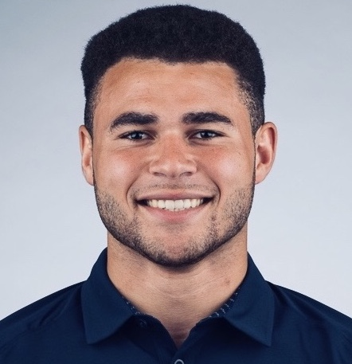

Home
☰
Home
☰
The Community Engagement (CE) Committee is dedicated to collaborating with all of the departments and committees in the office to establish relationships with Cal stakeholders, engage and share resources and events with the Berkeley community, and work to uplift internal projects to be as equitable and as inclusive as possible.
Isabel Huerta is a sophomore double majoring in Political Science and Ethnic Studies and pursuing a minor in Race and Law. Born and raised in Santa Barbara, she hopes to dismantle institutional white supremacy in schools, by writing anti-racist school policy and targeting the very curriculum that is taught in K-12 education #ethnicstudies. In her free time, she loves making charcuterie boards, learning tiktok dances, and spending an entire day at the beach.

Jason Dones is a first-year studying Physics and Political Economy. As Community Engagement Associate, he hopes to help make the ASUC more responsive to and representative of the student population. He chose to join the office of Senator Chaka Tellem because he knows that this office is committed to bringing everyone in and keeping Cal the best while making us even better. He loves playing soccer, cooking, and traveling in his free time. When we get back in-person, you can find him in the physics lab or taking a hike off-campus.
Bianca is a first-year from Los Angeles, CA who intends to major in Ethnic Studies. She is a Community Engagement Associate for Senator Tellem’s office. Bianca is very passionate about social justice, government, community engagement, and research. After Cal, Bianca hopes to attend law school. In her free time, Bianca enjoys taking walks, painting/drawing, exploring cities, traveling, and going to events.
Zach Neff is a third-year studying Political Science and a member of the Cal Varsity Rugby team. Hailing from Sacramento, California, Zach has a passion for Public Policy and Public Organization. He embraces intersectionality and seeks to advance community empathy and tolerance for all walks of people. Zach is a member of the Pi Kappa Alpha fraternity and is the co-founder of the POC in Greek Life club. In his free time he enjoys deep conversations, long walks on the beach, and kicking it.
Helen is a second-year student intended to major in Applied Mathematics, with a possible minor in Statistics. She is currently serving as a Community Engagement Intern in Senator Tellem’s Office. Having been raised in a place with a relatively homogenous population, Boise, Idaho, she wants to make sure diversity and inclusion are not only ongoing conversations, but that changes are being actively worked for and implemented in a world filled with systemic racism. Helen loves music, meeting new people, napping, and cooking. No, she does not do the cleaning.